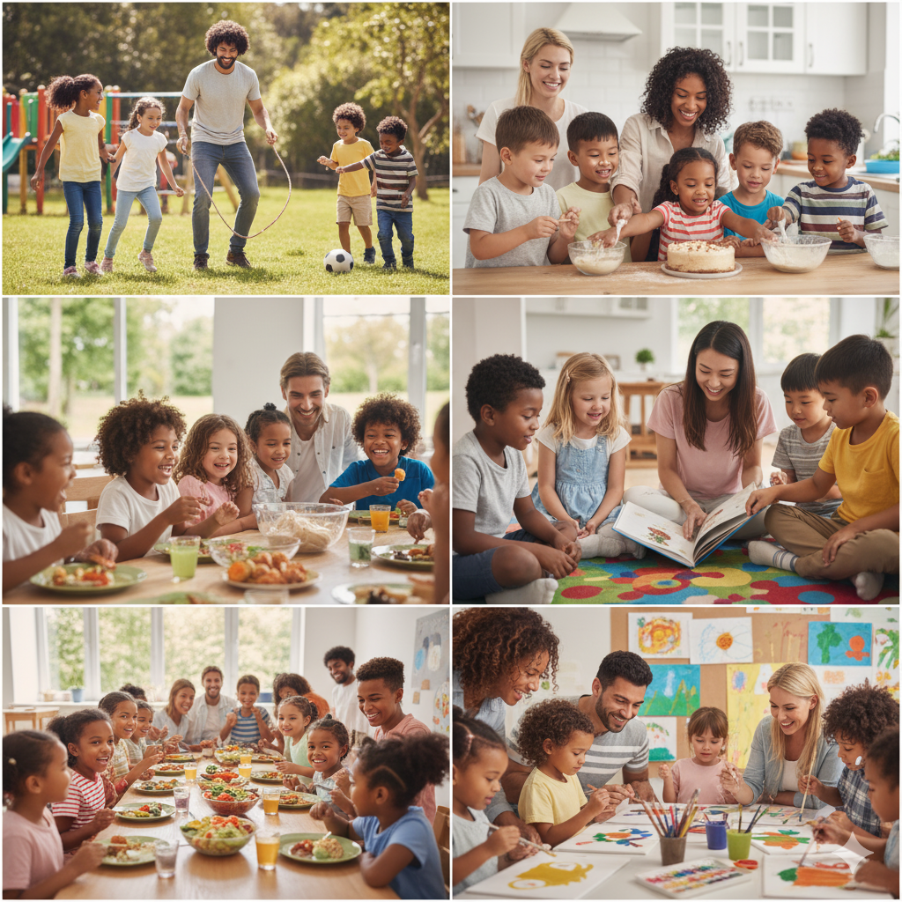

Explore as diversas formas de doar seu tempo e seu coração. Sua companhia é um presente inestimável que promove o bem-estar e o desenvolvimento de cada criança.
Nosso voluntariado é sobre presença e afeto. Conectamos você a abrigos e orfanatos para compartilhar tempo de qualidade com as crianças, garantindo que elas recebam o carinho e a atenção que merecem para crescerem seguras.
Temos como objetivo principal assegurar que nenhuma criança acolhida sinta-se invisível, promovendo o desenvolvimento seguro e pleno através da doação incondicional de afeto.
Através do voluntariado, ajudamos as crianças não só com o carinho, mas também com os deveres de casa e reforço escolar. O foco é apoiar o aprendizado e construir uma base sólida para o futuro de cada uma.
Acreditamos que o carinho anda junto com o cuidado essencial. Por isso, trabalhamos em parceria com a comunidade para assegurar o atendimento básico, vacinação em dia e acompanhamento médico contínuo de todas as crianças acolhidas.
Atividades culturais e sociais que promovem integração, autoestima e cidadania.
Seja voluntário e faça parte dessa transformação!